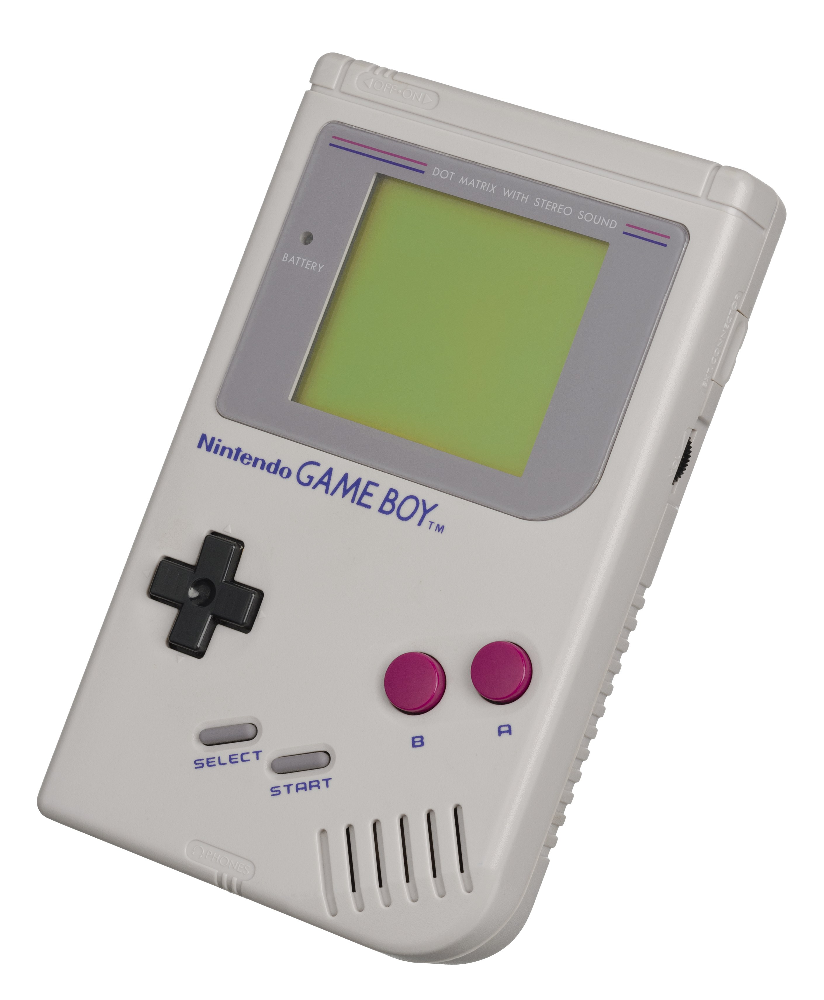

The Autopsy Report · Device #015
The Game Boy
The gray brick that outlasted every rival by being cheaper, tougher, and sippier on batteries. We haven't opened one yet, so this report is built from the public record: the technical literature, independent hardware references, and the chip Sharp built for it.
What is this thing?
The Nintendo Game Boy is the 1989 handheld that made portable gaming a mass-market habit: a gray plastic brick with a green-tinted screen, four AA batteries that lasted a school week, and Tetris in the box. It sold over 118 million units across its models. Wikipedia
The Game Boy Color (1998) is the same idea with a color screen — not a new generation, but a faster, color-capable revision of the same hardware. This report covers the family from the 1989 original (DMG, "Dot Matrix Game") through the Color (CGB), ending with the 2003 Game Boy Advance SP era boundary — the Game Boy line proper. Inside the original: a Sharp-built CPU running at 4.19 MHz, 8 KB of working RAM, and a screen that shows four shades of green-gray. The Color doubles the speed (with an 8.38 MHz fast mode), doubles the memory, and adds a 15-bit color palette. Wikipedia
Not yet on our bench
No unit of ours has been opened for this report. Everything below comes from public records: the published technical references, independent hardware documentation, and the historical record. The public-record facts are as complete as we could make them; what awaits the bench is everything that requires our hands on our hardware — our own photos, our own measurements, and confirmation of exactly which board revision our future unit carries. When a Game Boy lands on the bench, the thin spots below are exactly where we'll start.
A short history
- April 21, 1989Nintendo launches the Game Boy in Japan (North America: July 31). Gunpei Yokoi's team bets on a cheap monochrome screen and long battery life over flashy color — and wins. Wikipedia
- 1989 – 1998Rivals with color screens and backlights (Atari Lynx, Sega Game Gear) come and go; the Game Boy outsells them all combined. Battery life beats beauty. Wikipedia
- October 21, 1998The Game Boy Color launches: same cartridge family, now with a color screen, double the clock speed, and double the memory. Wikipedia
- 2003The Game Boy line winds down as the Game Boy Advance takes over. Total: over 118 million units — the gray brick retires undefeated. Wikipedia
The outside
A gray rectangle with a cross-shaped D-pad, two round buttons (A and B), Start and Select as rubber pills, a volume wheel and a contrast wheel on the sides, and a screen the size of a postage stamp. The Color is smaller and comes in atomic purple and a rainbow of shells. What the photo can't show: the satisfying click of the power switch, or the way the contrast wheel fades the screen to nothing.

The board
The Game Boy's board is famously simple: one main chip does nearly everything. The DMG-CPU — built by Sharp — contains the processor and most of the system logic in a single package, surrounded by a small amount of RAM, the cartridge connector, the link-port circuitry, and the power regulation. Hardware reference The Color's board (CGB-CPU) follows the same pattern at higher speed. Exact board revisions, date codes, and factory variations of our future unit are unknown until we open one ourselves.
Under the microscope: the chips
What's on the board, what each part does, and how sure we are. Confirmed means primary evidence only — an FCC exhibit, a manufacturer manual or datasheet, or an official announcement. Likely means corroborated secondary or public-teardown evidence. Markings are representative; board revisions differ.
| Chip | What it does | How we know | Dig deeper |
|---|---|---|---|
| Sharp LR35902-family CPU DMG-CPU @ 4.194304 MHz; CGB @ 4.19 / 8.38 MHz |
The whole system in one package: an 8-bit processor (a hybrid of the Intel 8080 and Z80 instruction sets) plus most of the console's logic. | Likely Chip family and speeds documented across the hardware literature; exact die markings vary by revision. | Hardware reference |
| 8 KB WRAM / 8 KB VRAM 32 KB / 16 KB on Color |
Working memory and video memory — tiny by any modern measure, and exactly enough. | Likely Per the published technical specifications. | Technical overview |
Sharp never published a public datasheet for the Game Boy's CPU — custom console silicon, again. The most complete public documentation is the community-maintained hardware literature (notably the Pan Docs tradition), which is secondary but deeply corroborated. Awaiting the bench: our unit's exact board revision, chip date codes, and the power-regulation section.
The government's file on this box
There isn't one, and the reason is the same as the PlayStation 2's: no radio transmitter, no FCC equipment authorization. The Game Boy and Game Boy Color have no Wi-Fi, no Bluetooth, no wireless of any kind — the link port is a wire. The FCC's filing system exists to manage radio transmitters, so a device with no intentional radiator never enters it. No console-level FCC ID was ever issued. That's normal, not suspicious — it means exactly what the rules say it means.
Debug and service modes
Nintendo never published a public recovery or service menu for the Game Boy or Game Boy Color. There is no button combination in any official Nintendo documentation we could find that boots one into a diagnostic screen. The closest thing the hardware offers is the famous Nintendo logo scroll at power-on — a boot check, not a service mode. Until we have a unit on the bench, we can't say what, if anything, the board quietly offers.
What public records show
The public record gives us the Game Boy family's full biography: launch and wind-down dates, the Sharp CPU and its speeds, the memory configuration, the screen technology, and the regulatory posture (no radio, no FCC filing). What it does not give us is anything that only exists inside a specific unit — board revision, date codes, or the factory-to-factory drift across a fourteen-year production run. That's the bench's job.
What we haven't done
- We haven't opened, photographed, or measured a Game Boy of our own.
- We haven't confirmed whether our future unit will be an original, a Color, or both.
- We haven't verified the chip markings against a physical board.
- We haven't tested any service procedure.
- The photo above is a freely licensed stock image, credited in full — not our hardware.
By the numbers
- Models: Game Boy DMG (1989), Game Boy Color CGB (1998)
- FCC ID: none — no radio transmitter
- CPU: Sharp LR35902-family, 4.194304 MHz (8.38 MHz fast mode on Color)
- Memory: 8 KB WRAM + 8 KB VRAM (32 KB + 16 KB on Color)
- Screen: 160×144, 4-shade monochrome (DMG); 15-bit color (CGB)
- Power: 4× AA batteries
- Launched: April 21, 1989 (Japan); July 31, 1989 (North America)
- Units sold: over 118 million across the family
Words to know
Every term this page uses, in plain English. No prior knowledge required.
- DMG
- "Dot Matrix Game" — Nintendo's internal name for the original Game Boy, after its dot-matrix screen.
- Z80 / 8080
- Two classic 1970s processor designs. The Game Boy's CPU speaks a hybrid of their languages.
- Dot-matrix screen
- The original's green-tinted LCD: no backlight, four shades of green-gray, readable in sunlight, invisible in the dark.
- Link port
- The wired connector for two-player games via a cable — the Game Boy's only "networking."
- FCC ID
- The ID the FCC assigns to each approved wireless product. Devices with no radio don't get one — like this one.
Sources & confidence
- Launch dates, sales figures, CPU/memory/screen specifications: published technical overviews. High confidence in the facts, medium in any single source.
- CPU family and architecture (Sharp, 8080/Z80 hybrid): the hardware literature, deeply corroborated. Medium-high confidence; exact die markings vary by revision.
- Regulatory posture (no radio, no FCC filing): researched; no filing expected or found. High confidence — a wired-only handheld of 1989.
- No public datasheet exists for the custom Sharp CPU. Stated as an industry documentation gap.
- Anything not listed here is unknown until the bench says otherwise. We'll say so, out loud, when that's the case.
We publish no firmware, serials, keys, or private data. This report uses only public records plus a freely licensed stock photo.
Legal note. BareBoard is an educational project. We don't publish, host, or distribute firmware, keys, passwords, or credentials. Product names and trademarks belong to their respective owners and appear here only to identify the hardware. If you believe anything here infringes your rights, contact us and we'll address it promptly.